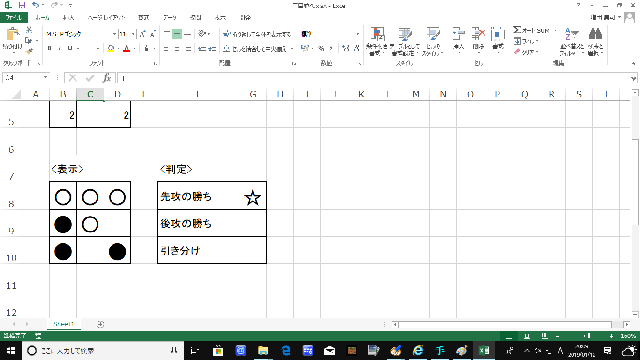

ようこそ
ようこそ
パソコンの勉強の一環でhtmlでホームページを作りました、良かったら見ていってね
記事は大体プログラミングとか理数科でやった実験とか
質問があったら私のツイッターにて
※注意！！スマホで閲覧している人は横向きにしないとページがはみ出ちゃうぞ！（横解像度1280pxで開発しています）
 分からない事があったら
分からない事があったら
初めてアクセスした人は必見
アイコンの意味、ショートカット、遊び方まで全部ここに載ってます
見てみる
 Recent Report
Recent Report
最近の更新報告や進捗具合の表示です
記事一覧

2019.02.05
2019年部活動紹介
将棋部で使う部活動紹介の動画です
尺が指定されていてとてもやりづらかった
見てみる


使用ソフトウェア

2019.01.30
コード⇔鍵盤 変換器
ピアノコードが読めない人におすすめ
選択肢から選べるので知らないコードの記憶にも使えます
また、コード→鍵盤 だけでなく、鍵盤→コード 機能もあります
展開形には対応していないので注意して
使ってみる


使用ソフトウェア

2019.01.11
抵抗器「サーミスタ」を用いて温度計を作ってみた
クリスマスの日に学校に行ってやった内容です
アルコール温度計よりも早くて正確な温度計を目指して制作
パワーポイントは欲張りセット、ワードは忙しい人向け
読んでみる


使用ソフトウェア


2018.12.23
マインスイーパー
懐かしのゲーム、Windows10に実装されてないから作ってみた
難易度５種類のほか、任意の爆弾の個数に変更可能
ショートカットキーでボタン、ゲームコントローラーでの操作も楽しめる
遊んでみる
使用ソフトウェア


2018.11.26
電卓（改）
VBAを使って、電卓を改善してみた
本物に近いUIにより、使いやすさUP
より高度な計算が可能に
遊んでみる
使用ソフトウェア

2018.10.02
電卓
メッセージボックスを使った電卓を作ってみた
２つの項で四則演算が可能
遊んでみる
使用ソフトウェア
2018.09.04
球面幾何学とはなにか
夏休みにずっと考えていたこと
かなり難しい文章で書かれている
読んでみる
使用ソフトウェア


2018.06.24
３目並べ
３×３マスの○×３目並べを作ってみた
勝敗判定、引き分け判定実装済み
遊んでみる
使用ソフトウェア